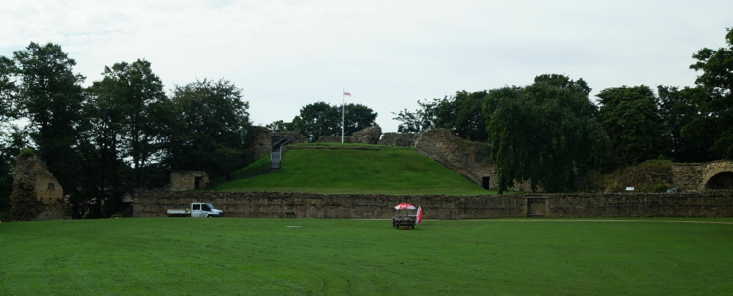
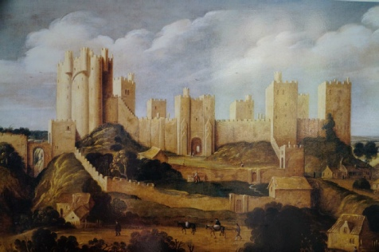

PONTEFRACT CASTLE, WF8 1QH
GETTING THERE
Postcode: WF8 1QH
Lat/Long: 53.6956N 1.3040W
Notes: Castle is in dedicated park and assessable during open times. No entry fee but shop (including guidebook) in vicinity. Free cark park well sign-posted.
WHAT IS THERE TO SEE?
The motte of the medieval castle along with some stone remains of the base of the Keep and the curtain wall. A portion of the basement of the tower in which Richard II was incarcerated also survives. Visitors can climb to the top of the motte.
VISIT OFFICIAL SITE (Opens in new window)
Castle is owned and managed by Wakefield Council .
ADDITIONAL NOTES
1. The Romans did not fortify Pontefract; instead they situated a fort several miles to the north at Castleford at the fording point over the River Aire.
2. Thomas of Lancaster, who took control of the Pontefract estate in 1311, was one of the individuals responsible for the downfall and execution of Edward II's favourite Piers Gaveston. In 1322 Edward II took his revenge and executed him for treason at Pontefract.
3. During the Tudor era the castle was handed over to rebels during the Pilgrimage of Grace - the 1536 revolt against Henry VIII. Several years later Catherine Howard, fifth wife of Henry VIII, allegedly committed her first act of adultery at Pontefract Castle with Sir Thomas Culpepper.
4. In 1569 Mary Queen of Scots briefly stayed at Pontefract Castle whilst heading to her luxury prison at Rotherham.
The 500 year history of Pontefract Castle witnessed the suspicious death of Richard II, rebels protesting against Henry VIII's religious change and three sieges by Parliamentary forces against the Royalist garrison within. The impenetrable defences warranted its demolition in 1649 ending the life of one of the greatest northern castles.
HISTORY OF PONTEFRACT CASTLE
Following the Norman invasion, William I created two large estates that straddled the north of England; Clitheroe and Pontefract. Both were granted to the de Lacy family and it was they who built the first castle. A traditional motte and bailey castle it served as the economic and commercial hub for the district.
When the last de Lacy died without a male heir, the castle passed into the hands of the Lancastrians and, when its new owner Henry Bolingbroke deposed Richard II in 1399 the castle became a Royal property. Richard II himself was incarcerated here (in the Gascoigne Tower) and died under suspicious circumstances a few months later. Allegedly he had been starved to death.
The castle was utilised during the Civil War where it was held by the Royalists. It came under siege in December 1644 and despite artillery and undermining the castle held out. On 1 March 1645 the siege was lifted by the arrival of Royalist forces under Sir Marmaduke Langdale but by the 16 March was under siege again and on the 19 July 1645 the Royalist garrison had been starved into surrender. Post war the castle was garrisoned by Parliament but as the second Civil War erupted in 1648 the castle was re-taken for the King. Arriving to support the siege Oliver Cromwell wrote: " <The castle> is very well known as one of the strongest inland Garrisons in the Kingdom; well-watered; situated on rock in every part of it; and therefore difficult to mine. The walls are very thick and high, with strong towers; and if battered, very difficult of access ". The castle held out for five months but, faced with artillery bombardment, starvation and no hope of relief surrendered on 24 March 1649. The castle, which had been heavily damaged in the fighting, was demolished on the orders of Parliament.
© Copyright 2016 | Terms and Conditions (inc Cookie Policy) | Contact Us
Painting by Alex Kierincx on display in the Pontefract Museum
Recovered original photographs, plans and images

